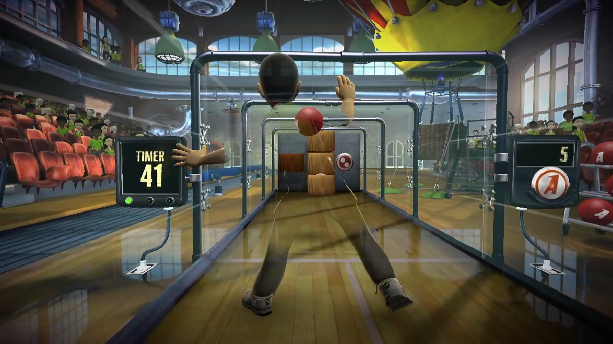
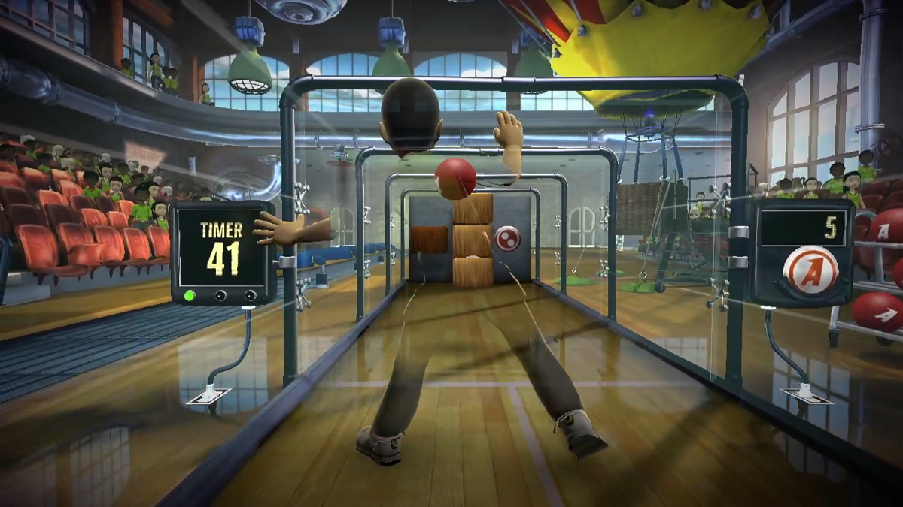

Description
Kinect Adventures is the main launch game for Microsoft's Kinect peripheral as it comes packed in with the Kinect device, much like Wii Sports for the Nintendo Wii.
The game offers five main mini-game challenges, largely geared towards showing off the device with casual, family-oriented gameplay. It requires the peripheral to play with online gameplay and local games for up to two players, head-to-head or cooperatively. Online players can be friends or random players found online.
Publishing Info
- Published by: Microsoft
- Developed by: Good Science Studio
- Release Date: November 4, 2010
- Platforms: XBOX 360
Game Info
- Genre: Action, Racing/Driving
- ESRB Rating: E (Everyone)
- Perspective: Behind View
- Players: 1 - 2
- Multiplayer Options: Split-screen
"It’d be a GREAT party game…especially accompanied by a little alcohol." - Steve Wright of stevivor.com
Images
 
